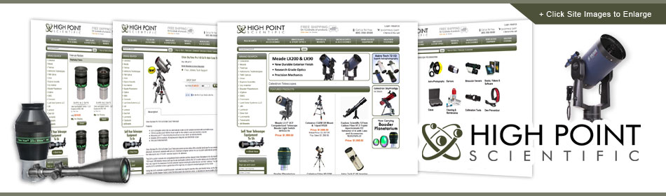

High Point Scientific (HPS) was founded in 2001 in New Jersey as a small telescope shop. At the time, the company's business was largely mail order, with brick and mortar accounting for about 25% of total sales and e-commerce occupying about 10%. As HPS has grown over the past 10 years, the company has expanded its product suite to include binoculars, tripods, microscopes and weather stations. At present, the brick and mortar side has decreased in relative importance while the e-commerce side has grown exponentially. HPS is now one of the largest optics retailers in the country.
As HPS's e-commerce sales became a more integral part of their overall business, HPS needed to improve the performance of their e-commerce platform. In 2009, HPS began to seek alternative solutions.
One of HPS's biggest challenges was the deficiencies of their order management program. Because it wasn't tied into their e-commerce platform or multi-channel platform, HPS employees frequently had to enter the same orders multiple times.
HPS's e-commerce business was also under-performing against the competition. Although HPS's sales had grown since opening in 2001, they still only accounted for 30% of HPS's overall sales and had fallen behind the rest of the market. HPS signed with Zoovy in early 2010 and their site went live in May 2010.
The first order of business was to streamline HPS's operations so the company could grow in other areas. Zoovy's Order Manager made this possible by connecting HPS's order management and e-commerce systems, thus making order processing automated. By managing the order at every step Order Manager has reduced errors, saved time and monitored employee accountability and productivity by tracking each shipment to the staff member that handles the package.
Zoovy's platform supports many of the most popular marketplaces. HPS relies particularly on Amazon and eBay. Zoovy's centrally managed syndication enabled HPS to increase their efficiency. Before, they had to manage each individually – manually adding products, retyping orders, updating inventory, etc. With Zoovy, the entire product submission is automated with one click, without HPS having to perform any additional steps.
Handling shipping efficiently and accurately is vital to any growing e-commerce business. Zoovy's UPS integration reduces HPS' shipping department's manual processes to purely printing shipping labels. Now, tracking information is automatically provided and deployed to individual channels and HPS' customers.
Marketing services – HPS works closely with Zoovy's marketing team to maintain HPS' Google Adwords program, advise them on SEO, review their site and analytics to make recommendations, and a whole host of other items.
Zoovy's marketing team is very sharp. I have complete trust in them to help me make the right decisions for my business.
~ Robert Dugan, President, High Point Scientific
After implementing Zoovy Complete, HPS has already experienced dramatic results in just six months.
Zoovy's technical support is second to none. Every time I call, I am able to reach someone. It's helpful that they're located in the U.S. and not offshore. I've been able to develop trusted relationships with the support team and am very appreciative of their time and accessibility.
~ Robert Dugan, President, High Point Scientific